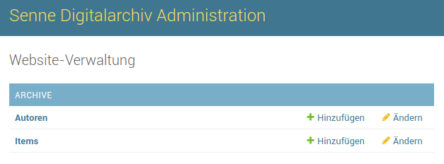

Adminbereich¶
Allgemeines¶
Login¶
Der Login erfolgt über den Link „Login“ am Boden der Seiten. Ist man eingeloggt, so ändert sich der Linkname zu „Adminbereich“ und man kommt in den Adminbereich bei Klick auf diesen Link.
Eine freie Registrierung ist nicht möglich. Das haben wir deaktiviert, da es für den Anwendungsfall nicht notwendig ist. Neue Accounts können über den Admin angelegt werden.
Der Editor¶
Im Web müssen wir Textformatierungen explizit mit angeben, damit der Internetbrowser weiß, wie er den Text anzeigen soll. So müssen Textausschnitte separat annotiert werden, um einen Effekt (beispielsweise Fettdruck) zu erzielen.
Da man sich das aber nicht alles auswendig merken möchte, wird an vielen Stellen im Adminbereich bei Textfeldern ein besonderer Editor verwendet, bei dem der eingegebene Text direkt mit diesen Annotationen versehen und eine Demo des fertigen Texts angesehen werden kann. Das kann beispielsweise so aussehen:
Im oberen Textfeld gibt man dabei seinen gewünschten Text ein und im unteren, nicht editierbaren Feld namens „HTML Preview“ wird die fertige Version angezeigt, wie sie dann auch für andere auf der Webseite angezeigt werden kann.
Inhalte bearbeiten¶
Startseite editieren¶
Die Startseite kann über den Adminbereich verändert werden. Bitte nur die bestehende Seite ändern und keine neue anlegen – einfach wie im Video die bestehende Seite anklicken und dann Texte hinzufügen oder ändern, neue Bilder einpflegen und so weiter. Eine Vorschau des Texts kann man direkt unter dem Eingabefeld sehen. Eine kleine Demo gibt es in dem folgenden Video:
Archivinhalte¶
Über die Startseite des Adminbereichs kann der Unterbereich erreicht werden, der für die Verwaltung der Archivinhalte verantwortlich ist. Dafür ist es notwendig im System eingeloggt zu sein (siehe Login).
Ein Eintrag (= Item) im Archiv ist immer mit einem Autor verknüpft. Dafür gibt es zwei Tabellen, in denen die entsprechenden Inhalte angelegt werden können.
Autoren¶
Mit einem Klick auf „Autoren“ oder auf „Ändern“ kommen wir an die Übersicht der Autoren. Hier können bereits eingetragene Autoren gesichtet und bearbeitet werden. Oben drüber gibt es eine Suche, die in Nachnamen und Vornamen des Autors sucht. Mit Klick auf die Tabellenspalten kann die Sortierung angepasst werden. Auf der rechten Seite sind Filter definiert, die es ermöglichen die Autorenübersicht ein wenig anzupassen. Da es aber wenig geteilte Attribute zwischen den Autoren gibt, bringt der Filter an dieser Stelle nicht sehr viel.
Autorenübersicht im Adminbereich
Autoren haben vier sichtbare Attribute:
- Titel: Akademische Grade / Titel, wie bspw. „Dr.“ können hier eingestellt werden
- Vorname und Nachname des Autors
- Speicherpfad: wird automatisch aus den oberen drei Feldern berechnet. Wird genutzt, um die Dateien, die vom Autor verfasst wurden und später unter Items / Artikel angelegt wurden, zu referenzieren. Dieses Feld kann nicht editiert werden.
Oben rechts befindet sich der Button „Autor hinzufügen“, den wir im nächsten Abschnitt behandeln.
Neuen Autor hinzufügen¶
Es muss mindestens ein Nachname zu einem Autor hinzugefügt werden. Die anderen Felder sind optional, sollten aber auch ausgefüllt werden, sofern die Informationen vorliegen. Die Maske zum Hinzufügen eines Autors ist daher auch sehr einfach. Der obere Bereich kann editiert werden, der Rest wird automatisch generiert.
Autor hinzufügen. Am Ende unten rechts auf „Sichern“ klicken.
Bestehenden Autor bearbeiten¶
Klickt man in der Abbildung „Autorenübersicht im Adminbereich“ auf den Nachnamen eines Autors, so kann man ihn editieren. Die Eingabefelder sind dann die selben, wie beim Hinzufügen eines neuen Autors.
Items / Artikel¶
Ohne Artikel wäre es ein sehr trauriges Archiv. Hier wird beschrieben, wie Items angelegt werden können, die dann sowohl intern als auch öffentlich einsehbar sind. Bitte unbedingt auf „Sichern“ klicken, damit die Artikel auch korrekt angelegt werden.
Bemerkung
Es erfolgt kein automatisches Speichern, sondern es muss manuell gespeichert werden.
Übersicht aller eingestellten Items.
Neuen Artikel anlegen¶
Klingt man in dem Bildchen oben auf „Item hinzufügen“, so öffnet sich die Maske zur Erstellung eines neuen Artikels.
Die Pflichtfelder sind bewusst gering gehalten, damit ein frustfreies Anlegen garantiert ist. Es ist natürlich sehr sinnvoll die anderen Felder auch alle mit auszufüllen, falls möglich.
Im Folgenden seien die einzelnen Felder erklärt, die ausgefüllt werden können.
Titel und Verfasser¶
- Titel
- Das ist der angezeigte Titel des Artikels, so wie er auch im öffentlichen Bereich angezeigt werden soll
- Verfasser
- Hier kommt der Autor hinein. Es sollte ein Autor verlinkt werden. Über das grüne „+“ kann die gleiche Maske wie in Neuen Autor hinzufügen aufgerufen werden.
Quelle¶
- Quelltitel
- Manchmal ist es sinnvoll den Titel der Quelle mit anzugeben. Das kann in diesem Feld erfolgen.
- Anzahl / Exemplare
- Kann gesetzt werden, wenn es sich um eine Offline-Referenz handelt.
- Medienart
- Zur genaueren Einordnung wird hier der Typ des Artikels mit angegeben.
- Standort (analoges Archiv)
- Handelt es sich um eine analoge Referenz, zu der kein digitaler Inhalt verfügbar ist, kann hier der Standort angegeben werden.
- Jahrgang
- Das Jahr, in dem der Artikel ursprünglich erschienen ist.
- Ort / Veröffentlichung
- Veröffentlichungsort, beispielsweise „Paderborn“
- Seiten
- Länge eines Artikels
- Anmerkungen
- Notizen und Anmerkungen zum Artikel können hier mit angegeben werden. Diese erscheinen auch im öffentlichen Bereich.
- Schlagworte
- Zur besseren Indexierung können hier die Themen des Artikels kurz angegeben werden. Wird von der Suche mit berücksichtigt.
Abstract¶
- Abstract
- Viele (wissenschaftliche) Publikationen haben einen kleinen Abstract, der mit extrahiert werden kann. Dieser wird von der Suche berücksichtigt und natürlich auch im öffentlichen Bereich angezeigt, sodass man sofort grob weiß, worum es geht.
Dateien¶
Digitale Artikel können direkt für die Öffentlichkeit zum Download bereitgestellt werden. Bis zu drei Abbildungen und drei Dateien können hier angelegt werden. Diese werden intern dem Autor zugeordnet und bekommen auch entsprechend dem Autor eine eindeutige Adresse, um einen Link daraus zu generieren, welcher im öffentlichen Bereich angezeigt und geteilt werden kann.
Meta-Informationen¶
Sollte ein Artikel nicht mehr öffentlich verfügbar gemacht werden, aber intern noch abgelegt sein, kann hier der Haken entfernt werden. Der öffentliche Bereich bekommt nur die veröffentlichten Artikel zu sehen.
Die weiteren Meta-Informationen („Hinzugefügt am“ und „Zuletzt geändert“) werden automatisch gefüllt und können nicht bearbeitet werden.
Artikel ändern¶
Über die Übersichtsseite, die wir in Übersicht aller eingestellten Items. gesehen haben, können Artikel auch verändert werden. Dabei muss einfach nur ein Artikel angeklickt werden und schon kann er editiert werden. Es ist wichtig, dass auf „Sichern“ geklickt wird, damit die Änderungen auch übernommen werden.
Bemerkung
Alle Änderungen sind sofort wirksam und online direkt einsehbar.
Filter¶
Der Adminbereich bietet die Möglichkeit die Artikel nach bestimmten Kriterien zu filtern. Dabei werden alle Filter angewandt, die gerade aktiv sind. Das heißt, wenn nur nach „Buch“ gefiltert wird, reduziert sich die Menge der Suchergebnisse. Wählt man nun noch zusätzlich einen Jahrgang aus, kannn die Suche weiter beschränkt werden. Durch ein Klick auf „Alle“ im entsprechenden Filter kann der Filter zurückgesetzt werden. Im Video zeige ich ein kleines Beispiel dazu, wie zuerst alle Artikel angezeigt werden, dann auf die Bücher beschränkt wird und anschließend noch ein Jahrgang gewählt wird. Zuletzt werden alle Filter zurückgesetzt und wieder alle Ergebnisse angezeigt.